Descriptiontop
The WordPress Documentation Template Static Beige is a Project developed by opprDev Team. opper Group is a group of talented people with many brands.
The WordPress Documentation Template Static Beige is a Project developed by opprDev Team. opper Group is a group of talented people with many brands.
From here you will be able to access to the WordPress Dashboard where is all Platform Back office.
The LogIn information was sent to your E-Mail.
Please contact oppr Support Team if you need help.
To login you just need the next 4 steps:
1) Access to the link;
2) Insert the Username sent to your E-Mail address;
3) Insert the Password sent to your E-Mail address;
Optional: you can mark Remember Me as optinal if you want to save this Log In session.
4) Press Log In.
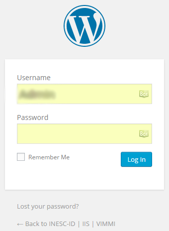
Now you are Loged In and we will have the next aspect:
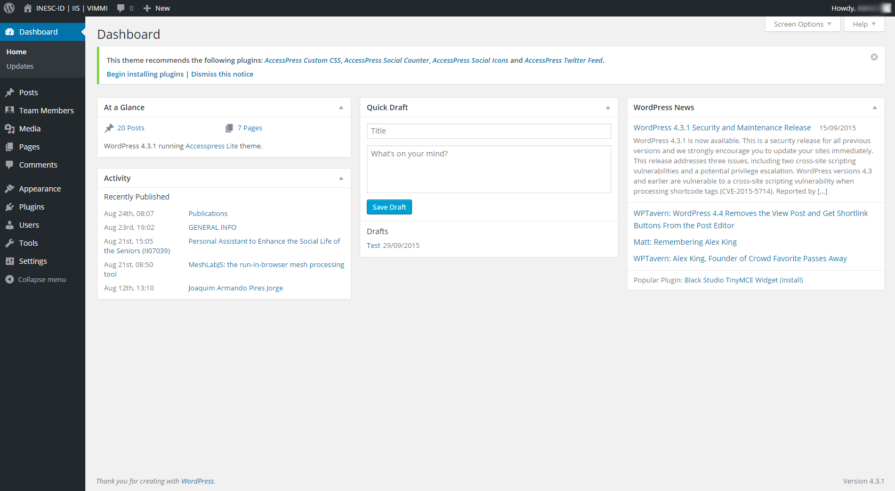
Now the second thing you should do is create and manage the Users and Team Members.
To create a user you just need the next steps:
1) On left menu, press Users;
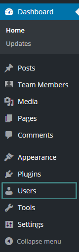2) And then press Add New;
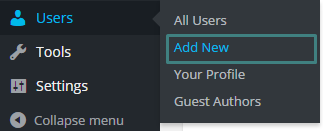3) Now please fill the fields:
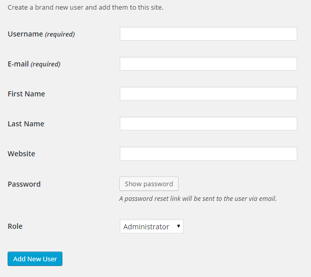4) Press Password;
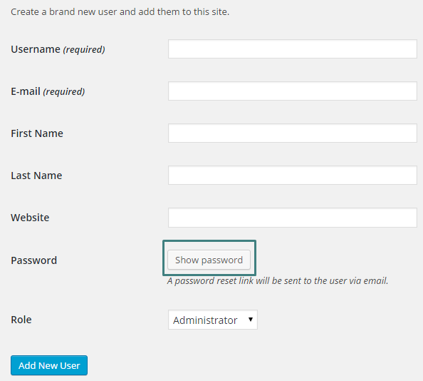5) Change the Password fields;
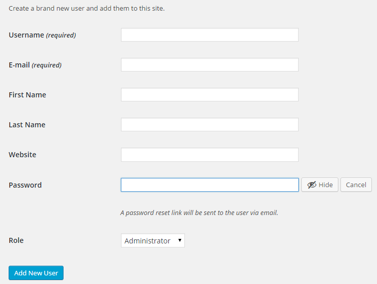6) Choose the Role;
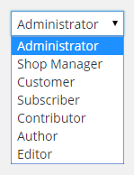7) Press Add New User;
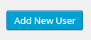You can now associate your created User to the Team Member with all of Member information.
1) On left menu, you will see Team Members;
2) And then press Add New Member;
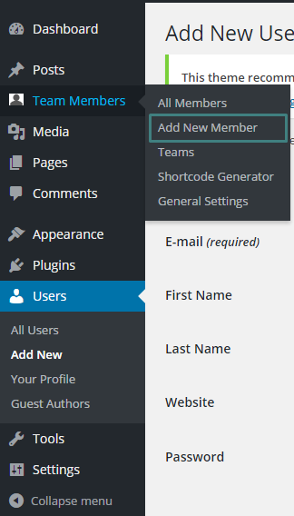3) Now please fill the Name field with your First Name and Surname:
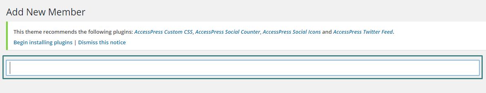4) Next you will need to associate your User to your Team Type of Role;
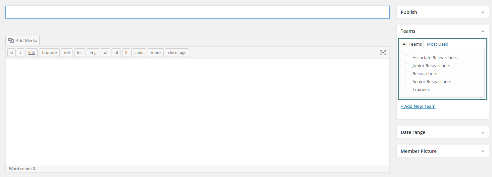5) Please insert on the next text box your Personal details, with a short description about yourself;
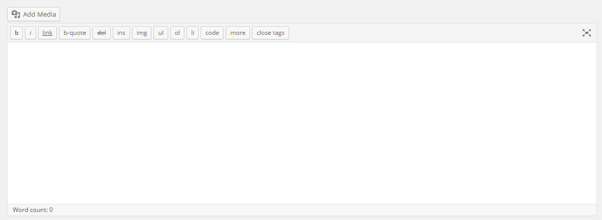6) Again please insert on the next text box your Personal Information on the fields;
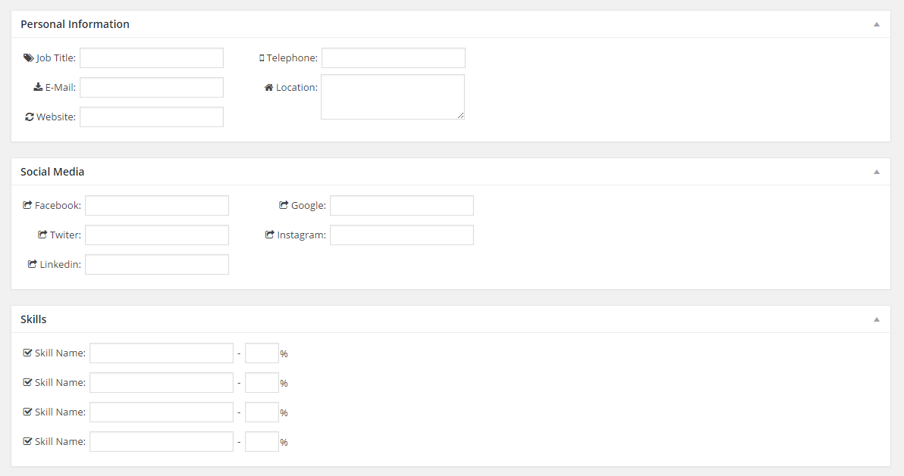7) Press on Selected an correlated Author menu and choose your User created by you;
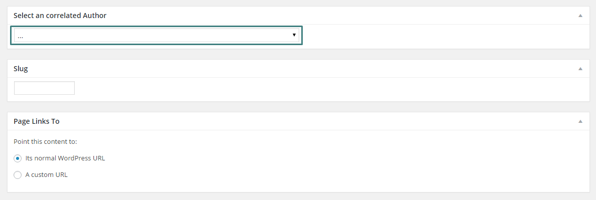In this section we describe how to create and edit the News page.
To create a News Post you just need the next steps:
1) On left menu, press Posts;
2) And then press Add New;
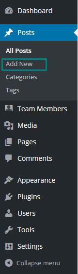3) Now please fill the fields:
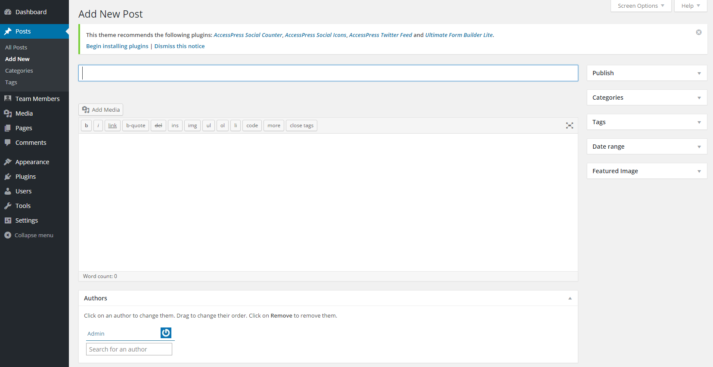3.1) Insert the News Title:
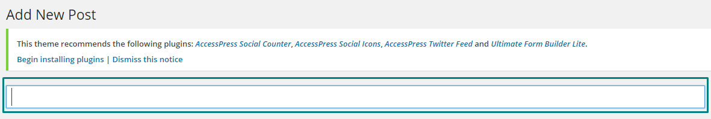3.2) Insert the News Description and Content:
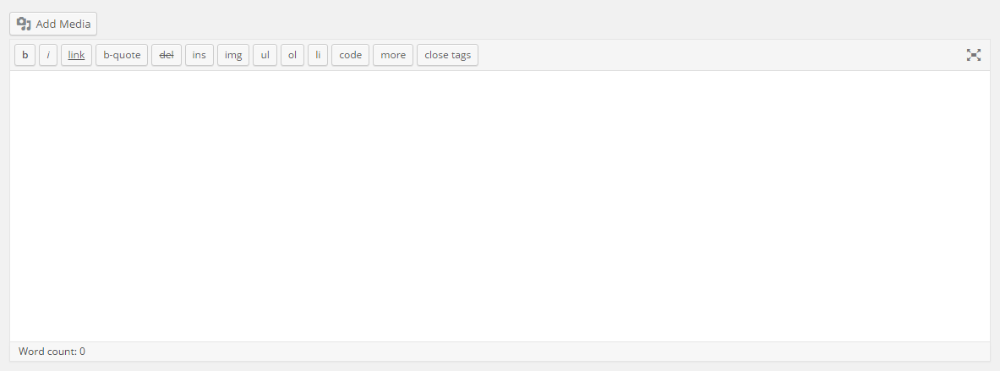4) Choose News Category;
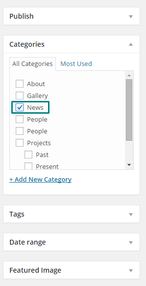5) Choose some Tags;
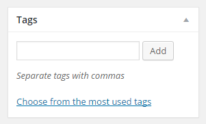6) Insert Feature Image;
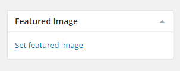7) Insert Author(s) name(s);
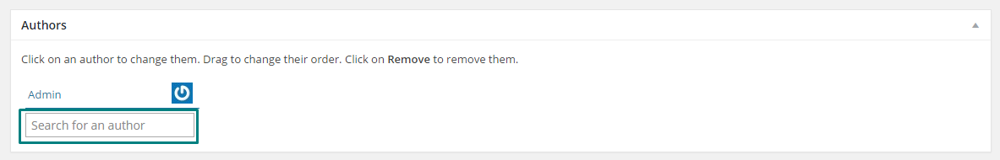8) Scroll up and Publish the News;
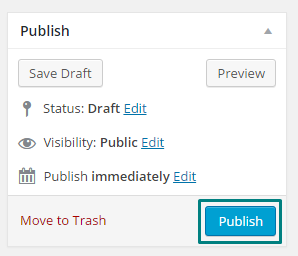In this section we describe how to create and edit the Projects page where you can choose:
- Present Projects
- Past Projects;
To create a Projects Post you just need the next steps:
1) On left menu, press Posts;
2) And then press Add New;
3) Now please fill the fields:
3.1) Insert the Project Title:
3.2) Insert the Project Description and Content:
4) Choose Projects Category, here you will have two options:
- Present Projects;
- Past Projects;
NOTE: you do not need to check the main Projects category box since it will apear on that same category, so you just need to check Present or Past.
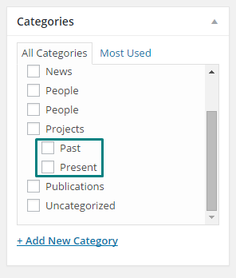5) Choose some Tags;
6) Insert Feature Image;
7) Insert Author(s) name(s);
8) Scroll up and Publish the Project;
For this project it was used the AccessPress Lite Theme and you can find more documentation about Documentation/Theme Instruction – AccessPress Lite page.
If you have any question, improvement or need help please do not hesitate to contact me:
E-MAIL: francisco.mcalisto@gmail.com